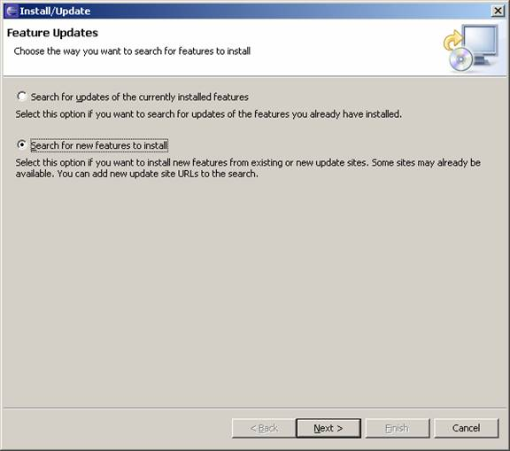
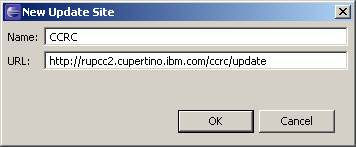
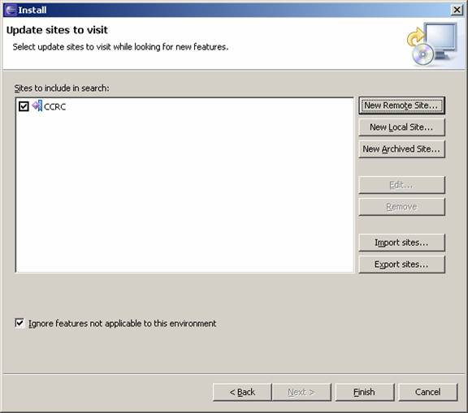
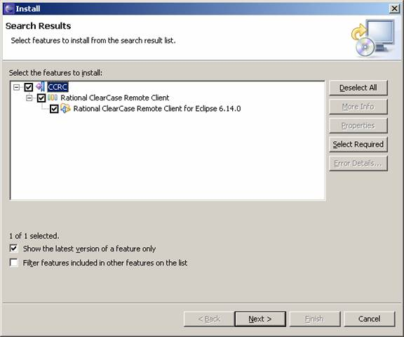
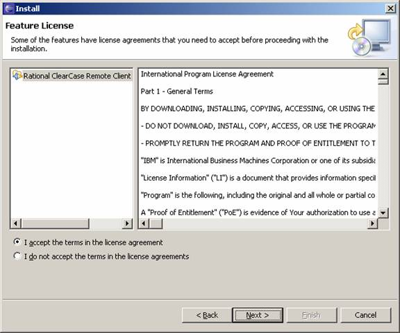
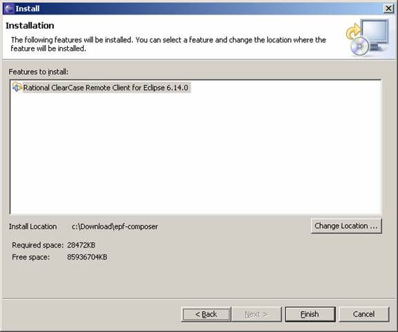
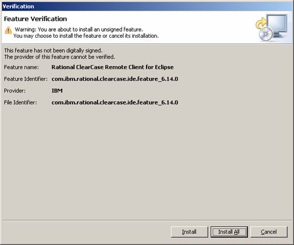
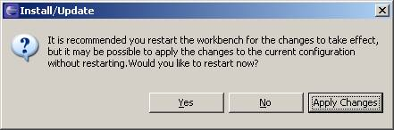
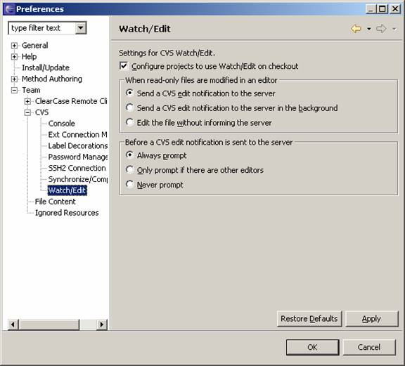

EPF Composer Release Notes
Release 1.0-M2
Introduction
This is an updated version of EPF Composer. The main features added in this
release include the following:
- Support for Linux platforms
- Several functional
improvements and fixes
System Requirements
Hardware Requirements
- Intel(TM)
Pentium® III 800 MHz or higher processor.
- 768
MB RAM minimum. More memory is recommended as it
improves responsiveness.
- Disk space:
- 50
MB to install EPF Composer.
- Display
resolution of 1024 x 768 x 256-color video resolution, or higher.
High-color or true-color recommended
Software Requirements
The following software must be installed before you
install EPF Composer:
- One of the following
operating systems:
- Windows® XP
Professional with Service Packs 1 and 2
- Windows 2000
Professional with Service Pack 4
- Windows 2003
Enterprise Edition with Service Pack 1
- Red Hat Enterprise
Linux 4 WS
- SUSE Linux SLES 9 SP3
- One of the following
browsers:
- Internet Explorer®
6.0 with Service Pack 1
- Internet Explorer 5.5
with Service Pack 2
- Mozilla
1.7.12
- Firefox
1.0.7 or 1.5
- Minimum SUN® JRE 1.4.2, or
later, is recommended.
New Features
The main new features in EPF Composer are
described below.
Export to Microsoft Project
You can now export a process to Microsoft Project. You can do this as
follows:
- Start EPF Composer and open
the library containing the process you want to export.
- Select File->Export.
This starts the Export wizard.
- Select Microsoft
Project Template and click Next.
- Choose the type of process
to export - Capability Pattern or Delivery Process and select the process
you want to export. If there is more than one
Configuration associated with the process, select the configuration you
want to use.
- You can choose to publish
the configuration at the same time by checking the "Publish the
configuration files" checkbox. You can also choose to only export
tasks and activities with the Planned attribute set to true. If you do not
check this box, all activities and tasks in the selected process will be exported.
- Provide a name for your exported
template file and select a location for the file. Click Finish.
- You can open the XML file
that is exported using Microsoft Project 2003 or
later. The XML file format is not officially supported
in earlier versions.
Synchronization of Processes to Method Elements
When a descriptor is created in a process, it has
the same properties as its corresponding base element. If the base element is
changed, the changes are not automatically reflected
in corresponding descriptors. Synchronization allows you to update descriptors
in a process with the latest version of the corresponding base method element.
This makes it easier to keep processes up to date with changes made to method
elements after they are used in processes.
Each descriptor has a new property, the "Synchronized with source"
flag, which can be set if you want to synchronize the element with its base
method element.
There is a new synchronization wizard that allows
you to choose the properties to update in a descriptor from the corresponding
base element.
To open the synchronization wizard, in the process editor,
right-click on any breakdown element and select "Custom
Synchronization". The wizard explains the feature and allows you to
select which properties to update from the base element.
You can also update all elements by right-clicking
on a breakdown element and selecting "Default Synchronization from Method
Content".
The synchronization features are available for descriptors and activities.
If you apply synchronization for an activity, all descriptors within the
activity that have the "Synchronized with source" flag checked will be synchronized.
Improvements to Diagrams
When an element in an extended Capability Pattern is
suppressed in the Work Breakdown Structure, the element is removed from
the corresponding diagrams. When elements are removed
from a diagram, the resulting diagram may not be satisfactory. For example, you
may have large empty spaces that seem inappropriate. You may also have nodes
that are not connected to anything. You can manually
modify these diagrams to improve their appearance. You won't
be able to make connections to nodes that are extensions to other process
elements (they appear with green italic text under the node). To enable the
ability to connect to these nodes on your diagram, locate the node in the work
breakdown structure (WBS) view. Choose 'Local Contribution' from this element's
context menu.
It is now possible to associate a diagram produced in an external graphics
tool with an element in a breakdown structure. To use this
facility, in the process editor, right-click on an activity and select
Diagrams>User Defined Diagrams. You can select which type of user
defined diagram you want to use and select the diagram file.
You can now resize the nodes on an activity diagram to wrap the name of the
node. On an activity diagram click on an activity or a task
descriptor. A box with handles is displayed
around the node. Use the handles on the side of the box to reduce or increase
the width of the box. The name of the activity or task descriptor will wrap
within the new size.
Improvements to Guidance
A new type of guidance - estimating considerations has
been added. The estimating considerations guidance allows you to add
guidance around how to estimate effort for tasks and work products.
A guidance element can now have associated guidance elements. We now support
adding guidance elements to other guidance elements using a new Guidance tab on
the guidance element editor.
A Template can now have multiple file attachments.
Support for Team Profiles
In a process, roles can now be organized into
teams. You do this as follows:
- On the
Team Allocation view in the process editor, right-click on an activity.
Select New Child or New Sibling, and then select Team Profile. The Team
Profile will be added as a breakdown element and
you can edit its information in the properties view.
- Select a role descriptor
and open the properties view. The Team tab allows you to assign the role
to one or more teams.
You can use this feature to organize the roles in a process into teams and
sub-teams. The make-up of teams can be different in different parts of a
process.
Improvements to Published Web Sites
The publication of process information has been improved
as follows:
- The Work Breakdown
Structure tab now shows a "consolidated view" of tasks with
their roles and work products. The display is limited to 3 levels, so sometimes the tasks and roles may not be
visible because they are too deep in the hierarchy to be seen. To see the
deeper levels, hyperlink to a lower level.
- The Team Allocation tab now
shows all roles 'rolled-up' to the selected activity with their associated
work products and tasks.
- The Work Product Usage tab
now shows all work products 'rolled-up' to the selected activity with
their associated work products and tasks.
- Each of the above tab
displays provide collapse / expand at the activity/task, role and work
product.
These changes provide clearer information about the process
and improve the information about roles and work products.
Improved Navigation between Views and Elements
In the library view, you can navigate to variability elements for a base
element. Right-click on an element and select "Open via
Variability Elements". A select dialog is opened
that lists the base element and all variability elements that are based on the
selected element. You can then open an element by double-clicking on it. You
can also do this from a variability element to find the base element.
The ability to link between the library view and other views has been enhanced as follows:
- While in the process
editor, you can link from a descriptor to the base method element. Right-click on a descriptor in a breakdown and select
"Show Linked Element in Library View". There
is also a toolbar button that can be used instead of the context
menu item.
- While in the configuration
view, you can locate a method element in the library view. Right-click on a process element and select "Show in
Library View".
In each case, the corresponding base method element is
highlighted in the library view. There could be contributors to this
element that add additional information, roles, or work products. You can use
"Open via Variability Elements" described above to locate variability
elements.
A few other improvements
- There are now toolbar
buttons in the process editor to move activities/tasks up or down.
- "Contributes to.." information is now on all tabs in editors.
- User can customize what
columns to display in the process editors
Known EPF Composer Issues
- When using the new synchronization feature, after each
synchronization operation on a capability pattern or delivery process,
please save it before doing another synchronization operation. This is to
prevent too many objects being stored in the undo command stack. Having
too much in the undo command stack may cause too much memory consumption.
- EPF Composer (EPF) is not designed for concurrent team authoring on the
same instance of a method library. However, there is a whitepaper
on "Using EPF with a Version Control System" available on the
EPF project web site at:
http://www.eclipse.org/epf/
This explains how you can use a version control
system to maintain your EPF Composer library.
- If you use one of the
following EPF 7.0.1 features in your content library, you may not be able
open the library using EPF 7.0 tool.
A: Added more than one attachment to a template
B: Created team profile
C: Customized activity diagrams
that contain suppressed activities or tasks. These diagrams will not
have a desirable look when viewed using EPF 7.0, because the suppressed
elements will reappear.
You must use EPF Composer to use a library with
these features.
- "Link with
Editor" button does not locate Custom Categories, but will expand
down to the "Custom Categories" UI folder in the Library View.
- Editor text fields cannot be read in High contrast mode. When High
Contrast mode is activated as EPF is running,
text in non-rich-text fields becomes unreadable. This is an Eclipse platform
bug. The workaround is to restart EPF.
- If you make changes to a
configuration that is used by an active process
editor, the changes to the configuration are not automatically refreshed
in the process editor. The workaround is to re-select the configuration
again in the combo box in the toolbar or use refresh in the context menu
or close and reopen the process editor.
- Drag and drop a capability
pattern or delivery process from library view to a rich-text editor may
not create the desired method element link. To create a method element
link to a capability pattern or delivery process, expand a rich-text
editor, click on 'add link' button, select the desired link type, click
Browse, navigate to the capability pattern or delivery process, expand it
and select the first child of the capability pattern or delivery process.
- Windows has a limited
overall number of system handles. When the system runs out of system
handles, EPF will not function properly. For example, double-clicking on a
method element will not bring up the editor. You need to close EPF and
close other applications to bring the available system handles to a
reasonable level and start EPF again.
- Changes made to the base
Activity Diagram of an activity are not automatically
reflected in any extensions of the activity. To see the changes,
open the Activity Diagram of each activity that extends the modified one,
right click on the background of the diagram and choose "Refresh from
Base". This will update the diagram. Save the change.
- In the Rich Text Editor, it
is not possible to input accented characters that require 2 key combinations. For example, '`'
and 'a' to produce 'à'. This is a limitation of the Eclipse SWT Browser widget that we
use. See
https://bugs.eclipse.org/bugs/show_bug.cgi?id=131017
for more info. Workarounds are:
- Use Alt key codes to
enter the accented characters. For a listing of Alt key codes on Windows,
see
http://tlt.its.psu.edu/suggestions/international/accents/codealt.html.
- Type the accented
characters in a non rich text field (like Brief
Description), and cut and paste the characters onto the rich text field
or editor.
- Expand the rich text
field, select the HTML tab and enter the accented characters in the HTML
source editor.
- In the Rich Text Editor,
formatting of text inside <pre>...</pre> may not be fully
preserved.
Version control support in EPF
ClearCase
Remote Client (CCRC)
Install CCRC from ClearCase
server
- Menu Help
/ Software Updates / Find and Install…
- Select Search for new features to install then click Next

- Enter new remote update site
for CCRC


then click Finish
- Select Rational ClearCase Remote Client for
Eclipse then click Next

- Follow the on-screen
instructions to install CCRC to RMC


- Click on Install All when you see the below
screen

Click on Apply Changes
when you see the following dialog box

CVS
Setting up
